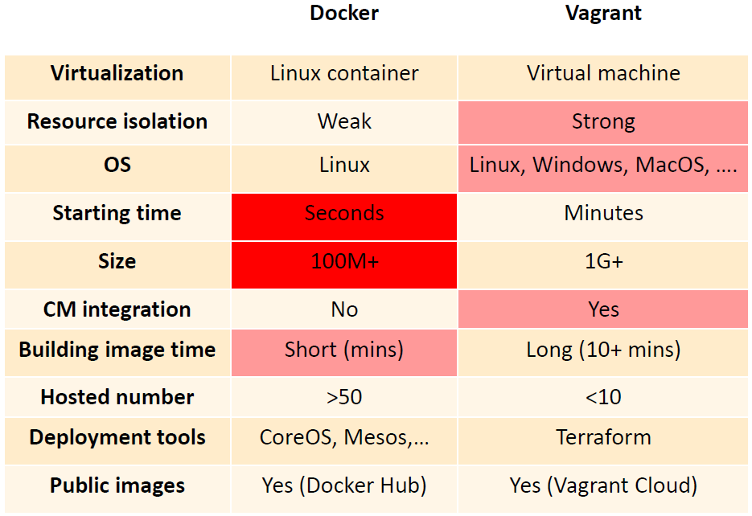

Pengenalan Docker¶
Perkembangan teknologi dewasa ini, tidak terlepas dari dukungan program/aplikasi yang tersedia dan terus beragam, seperti bahasa pemrograman, service, dan tools lainnya.
Sayangnya karena terlalu banyaknya macam program yang harus diinstall dalam satu Operating System, menjadikan tiap service yang running daripada program tersebut tersebut sulit untuk di-maintain.
Belum lagi adanya perbedaan tiap service di local machine (PC/laptop) dan juga di server mengakibatkan banyaknya hal yang harus dilakukan seperti me-list tiap service dan melakukan konfigurasi sebelum menjalankan application.
Sehingga teknologi virtualisasi mulai dikembangkan untuk mengatasi permasalahan tersebut.
Virtualisasi¶
Virtualisasi menjadi solusi atas permasalahan semakin kompleksnya resource development (program, service, tools) yang harus diinstall untuk menjalankan suatu application.
Dengan adanya virtualisasi maka memungkinkan semua resource development dikemas dalam satu bundle yang siap untuk dijalankan baik di local dan server, sehingga membuat adanya perbedaan baik di local atau server menjadi sangat kecil sekali.
Dengan begitu maka akan mempermudah dan mempercepat dalam proses deploy ke server, karena semua resource development yang dibutuhkan sudah ada dalam virtualisasi tersebut.
Terdapat berbagai macam teknologi virtualisasi yang biasa digunakan, beberapa yang cukup populer adalah seperti VMWare, Vagrant dan VirtualBox.
Namun kebanyakan teknologi virtualisasi menggunakan teknologi hypervisor sehingga harus memulai semua dari awal, seperti proses instalasi OS (operating system), konfigurasi OS sampai instalasi resource development yang dibutuhkan.
Ini menjadikan depedency yang cukup besar karena harus menyiapkan segala kebutuhan resource development tersebut.
Belum lagi dengan ukuran virtualisasi yang bisa sangat besar karena biasanya untuk satu operating system bisa memiliki sekitar 600MB, belum dengan resource development yang dibutuhkan.
Teknologi virtualisasi (Hypervisor)¶
Hypervisor sendiri ada dua kategori, yaitu Native Hypervisor dan Hosted Hypervisor.
Native Hypervisor merupakan virtual mesin yang berjalan / diinstalasi langsung pada hardware (PC) contohnya adalah software Proxmox, VMware ESX, Hyper-V, dll.
Sedangkan Hosted Hypervisor adalah virtual mesin yang diinstalasikan diatas operating system yang selanjutnya terdapat adanya guest operating sistem (virtual OS machine) berjalan pada proses aplikasi virtual tersebut, contohnya adalah software VirtualBox, VMware Player / Workstation, Parallels Desktop, maupun Qemu.
Pada intinya sebuah hypervisor akan menyediakan layanan virtualisasi operating system (atau yang biasa disebut dengan guest os) dimana di dalam guest os tersebut akan terinstall library dan dependency untuk menjalankan suatu application.
Maka dari itu kebutuhan resource (cpu, ram, hdd, dll) akan semakin besar seiring dengan banyaknya menjalankan guest OS, dan juga untuk menjalankan suatu guest OS akan memakan waktu yang relatif lebih lama.
Teknologi Hypervisor diatas kurang bisa meng-cover kebutuhan developer baik dari segi waktu, ukuran file dan konfigurasinya, oleh Karenanya terdapat teknologi terbaru yang bernama docker yang bisa melakukan virtualisasi secara lebih efektif dan efisien.
Teknologi Docker¶
Docker adalah sebuah aplikasi open source yang berfungsi sebagai wadah (container) untuk membuat sebuah mesin virtualisasi secara lengkap beserta semua komponen yang dibutuhkan.
Docker menjadi perhatian para developer sejak tahun 2013, diperkenalkan oleh Solomon Hykes dalam acara PyCon US.
Beberapa waktu setelahnya, Docker dirilis pertama kali pada bulan Juni tahun 2014.
Docker dikembangkan oleh Solomon bersama rekannya Andrea Luzzardi dan Francois-Xavier Bourlet.
Pada saat itu Docker merupakan proyek internal dotCloud, hasilnya, saat ini Docker sudah menjadi platform populer di lingkungan para developer di berbagai belahan dunia meskipun belum terlalu populer di Indonesia.
Docker sendiri merupakan sebuah perusahaan yang menyediakan layanan platform container (sebagai salah satu layanan docker registry secara resmi).
Kemampuan yang dimiliki Docker yaitu mampu menjalankan berbagai macam aplikasi dengan konfigurasi sistem yang berbeda-beda, meskipun masih dalam satu perangkat komputer atau server.
Berbeda dengan virtualisasi yang lain docker menawarkan cara yang lebih memudahkan dalam membuat virtualisasi.
Docker menggunakan teknologi container dan image atau dapat diartikan container adalah instance (instansiasi) daripada suatu image (mirip dengan konsep Object pada OOP Programming)
Note
Untuk pengertian lebih lanjut mengenai container dan image akan dibahas pada materi selanjutnya
Perbedaan Docker dengan virtualisasi yang lain¶
Seperti yang telah dituliskan diatas, bahwa docker memiliki keunggulan karena memiliki container, dengan container maka tidak memerlukan adanya proses pembuatan virtual dari awal (OS, konfigurasi hardware, dll).
Berikut ini perbedaan antara docker dengan vagrant (konsep virtualisasi vagrant hampir mirip dengan VMWare dan VirtualBox)
